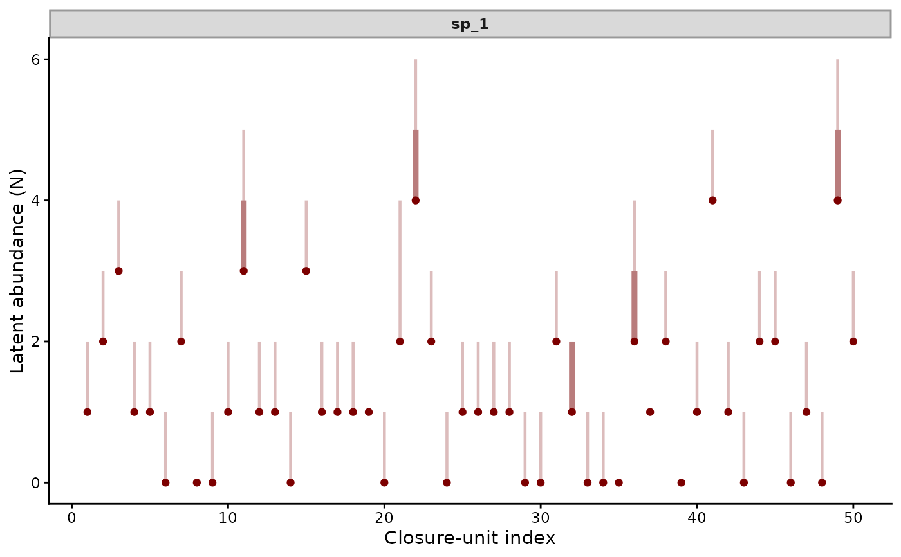

For counts made on repeated visits to sites whose abundance stays
fixed across the visits, such as bird point counts within a season.
The data hold one row per visit. The visits sharing a series and a
time belong to one closure unit, whose latent abundance N is
Poisson with mean mu. Each visit's count depends on N and the
detection parameter p. The likelihood sums over N from the
unit's largest count up to the cap K_max (Royle 2004).
Usage
nmix(
type = c("poisson_binomial", "royle_nichols", "poisson_poisson"),
multi_season = FALSE
)Arguments
- type
The variant,
"poisson_binomial"by default. See Choosing a variant.- multi_season
Logical.
TRUEkeys a closure unit on(series, site, time), for several seasons of visits to each site. The data then need asitecolumn, whichpivot_detection_array()creates from a four-dimensional array withmulti_season = "hierarchical". Each unit holds the visits of one site in one season.
Details
bf(y ~ elev, p ~ tod) models abundance and detection, each with
its own formula. mu takes the log link. predict() with
type = "latent_state" gives the expected abundance of each unit
given its counts. type = "detection" gives the detection
probability of each visit.
Choosing a variant
All three variants take N ~ Poisson(mu) and differ in what a visit
records.
"poisson_binomial"(Royle 2004)Counts
y ~ Binomial(N, p), which never exceedN. Point counts, removal passes and plot tallies fit this design.pis the detection probability of each individual, on the logit link."royle_nichols"(Royle and Nichols 2003)Detections
y ~ Bernoulli(1 - (1 - p)^N)in 0 / 1. Camera-trap or eDNA detections scored as present or absent fit this design.pis the detection probability of each individual, on the logit link. A visit's detection probability rises withN."poisson_poisson"(Neyman 1939)Counts
y ~ Poisson(N * p), which can exceedN. Camera-trap events and acoustic detections, where one individual is recorded several times, fit this design.pis the encounter rate of each individual per visit, on the log link.
Priors
A detection probability p on the logit link takes beta(1, 1) as
a scalar. With a formula, its intercept takes normal(0, 1.5),
which puts most of the probability between 0.05 and 0.95. The
encounter rate of "poisson_poisson" takes lognormal(0, 1) as a
scalar. With a formula, its intercept takes std_normal(). Either
puts most of the rate between 0.14 and 7.4 encounters per visit.
get_prior() lists these defaults. prior(..., dpar = "p")
replaces one. A rare species might take
prior(normal(-2, 0.5), class = Intercept, dpar = "p").
Identification
The counts identify abundance and detection apart through repeated
visits and through covariates that act on one of them. With one
visit per unit and no covariate, the data identify only the product
mu * p. nmix() refuses that model. More than 30% of units
visited once raises a warning. A "poisson_poisson" model with
intercepts alone separates mu from p only through the extra
variance of its counts. It warns. An informative prior on one
intercept separates them.
Overdispersed abundance, such as negative binomial counts fitted by
a Poisson N, biases abundance up and detection down, leaving their
product close to the truth (Knape et al. 2018). pp_check() with
type = "fit_stat" tests the per-unit totals for such misfit.
The cap on abundance
A cap column, constant within each unit and at least its largest
count, sets the cap K_max. Without one, "poisson_binomial" and
"poisson_poisson" take each unit's largest count plus 100, as
unmarked::pcount() does. "royle_nichols" takes a fixed 25, as
unmarked::occuRN() does. Its 0 / 1 detections carry no count to
build a cap from.
A lower cap shortens the sum and speeds sampling. A cap that binds
biases abundance down. latent_N_saturation() reports, for each
unit, the posterior probability that N equals its cap. A
prediction frame may carry its own cap.
Joint species models
jsdgam() with nmix() or occ() fits several species at once.
Latent factors shared by the species enter the state mu. p
keeps its own formula. factor_formula = ~ s(env, by = lv_axis())
lets each factor follow an environmental gradient.
Importing array data
Detection histories from unmarked, spOccupancy or
ubms come as a site-by-visit matrix, an array with species or
seasons as further dimensions, or a list of matrices.
pivot_detection_array() converts any of these to the long format,
broadcasting site, season and visit covariates to their rows.
Threading
The density sums over units through Stan's reduce_sum(). Fitting
with threads = 2 or more splits the units across threads.
References
Royle, J. A. (2004). N-mixture models for estimating population size from spatially replicated counts. Biometrics, 60, 108-115. doi:10.1111/j.0006-341X.2004.00142.x
Royle, J. A. and Nichols, J. D. (2003). Estimating abundance from repeated presence-absence data or point counts. Ecology, 84, 777-790. doi:10.1890/0012-9658(2003)084[0777:EAFRPA]2.0.CO;2
Neyman, J. (1939). On a new class of "contagious" distributions, applicable in entomology and bacteriology. Annals of Mathematical Statistics, 10, 35-57. doi:10.1214/aoms/1177732245
Knape, J., Arlt, D., Barraquand, F., Berg, A., Chevalier, M., Part, T., Ruete, A. and Zmihorski, M. (2018). Sensitivity of binomial N-mixture models to overdispersion. Methods in Ecology and Evolution, 9, 2102-2114. doi:10.1111/2041-210X.13062
See also
occ() for the related joint-occupancy family and
pp_check.mvgam() for closure-unit goodness-of-fit checks. The
N-mixture article fits N-mixture and
occupancy models from data preparation to inference. The
data article sets out the row layout
that nmix() expects.
Other observation families:
beta_nb(),
categ(),
com_binomial(),
diri(),
multi(),
mvgam_families,
mvn(),
mvt(),
occ(),
tweedie()
Examples
# \dontrun{
# Counts at 50 sites, each visited four times. The state `mu` is
# the expected abundance and `p` the detection probability.
set.seed(5)
simdat <- sim_closure_unit_data(family = nmix(), n_species = 1L,
n_sites = 50L, n_visits = 4L,
type = 1L)
mod <- mvgam(
bf(y ~ env, p ~ tod_c),
data = simdat$data_train,
family = nmix(),
chains = 2,
silent = 2
)
summary(mod)
#> Family: nmix
#> Links: mu = log; p = logit
#> Formula: y ~ env
#> p ~ tod_c
#> Data: simdat$data_train (Number of observations: 200)
#> Draws: 2 chains, each with iter = 2000; warmup = 1000; thin = 1;
#> total post-warmup draws = 2000
#>
#> == Observation Model ==
#> Regression Coefficients:
#> Estimate Est.Error l-95% CI u-95% CI Rhat Bulk_ESS Tail_ESS
#> Intercept 0.25 0.14 -0.02 0.52 1.00 1685 1600
#> p_Intercept 0.48 0.19 0.09 0.83 1.00 1443 918
#> env 0.09 0.12 -0.15 0.33 1.00 2110 1673
#> p_tod_c 0.06 0.04 -0.02 0.14 1.00 1808 1686
#>
#> Draws were sampled using sampling(NUTS). For each parameter, Bulk_ESS
#> and Tail_ESS are effective sample size measures, and Rhat is the potential
#> scale reduction factor on split chains (at convergence, Rhat = 1).
#>
#> Next steps:
#> - `pp_check(fit, type = "fit_stat")`: goodness of fit of unit totals
#> - `plot(hindcast(fit, type = "latent_state"))`: posterior abundance of each unit
#> - `forecast(fit, newdata = ...)`: out-of-sample forecasts
#> - `loo(fit)` / `loo_compare(...)`: model fit + comparison
#> - `conditional_effects(fit)`: covariate effects
#> Use `how_to_cite(fit)` for a methods paragraph and `methods_md(fit)` for its equations.
# Abundance and detection, separated by the model
head(predict(mod, type = "latent_state"))
#> Estimate Est.Error Q2.5 Q97.5
#> [1,] 1.0560 0.2385214 1 2
#> [2,] 2.0805 0.2775937 2 3
#> [3,] 3.1135 0.3415788 3 4
#> [4,] 1.1105 0.3321821 1 2
#> [5,] 1.0500 0.2179995 1 2
#> [6,] 0.0330 0.1786812 0 1
head(predict(mod, type = "detection"))
#> Estimate Est.Error Q2.5 Q97.5
#> [1,] 0.6815371 0.05912045 0.5660061 0.7897099
#> [2,] 0.6069331 0.04494594 0.5091557 0.6904690
#> [3,] 0.5373793 0.07305650 0.3918252 0.6766916
#> [4,] 0.6350496 0.04462901 0.5402543 0.7164926
#> [5,] 0.6514227 0.04807929 0.5541580 0.7396605
#> [6,] 0.6346711 0.04457818 0.5399661 0.7159861
plot(hindcast(mod, type = "latent_state"))

# A goodness-of-fit test on the per-site totals. A Bayesian p-value
# near 0 or 1 marks a misfit.
pp_check(mod, type = "fit_stat", stat = "freeman_tukey",
ndraws = 200L)
#> Posterior predictive check (closure-unit discrepancy)
#> Family: nmix
#> Statistic: Freeman-Tukey
#> Aggregation: closure unit
#> Posterior draws: 200
#> Bayesian p-value: 0.235
# }